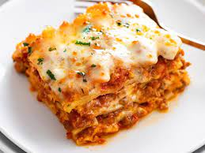

Lasagna
Lasagne (/ləˈzɑːnjə, -ˈsɑːn-/, also UK: /-ˈzæn-, -ˈsæn-/, Italian:
[laˈzaɲɲe]; singular lasagna, Italian: [laˈzaɲɲa]) are a type of wide,
flat pasta. It is an Italian dish made of stacked layers of this flat
pasta alternating with fillings such as ragù (a meat sauce or tomato
sauce) and other vegetables, cheese (which may include ricotta and
parmesan), and seasonings and spices such as garlic, oregano and basil.
- 2 teaspoons olive oil
- 1 pound ground beef chuck
- 1/2 medium onion
- 1/2 large bell pepper
- 2 cloves garlic
- 1 can good quality tomato sauce
- 3 ounces tomato paste
- 1 can crushed tomatoes
- 2 tablespoons chopped fresh oregano
- 1/4 cup chopped parsley
- 1 tablespoon Italian seasoning
- 1 pinch garlic powder
- 1 tablespoon red or white wine vinegar
- 1 tablespoon to 1/4 cupsugar
- Salt
- 1/2 pound dry lasagna noodles
- 15 ounces ricotta
- 1 1/2 pounds mozzarella
- 1/4 pound parmesan cheese
- Put pasta water on to boil
- Brown the ground beef
- Cook the bell pepper,onions, garlic, add back beef
-
Transfer to medium sized pot, add tomatoes and remaining sauce to build
sauce
- Boil and drain lasagna noodles
- Heat oven to 375F
- Assemble lasagna
- Bake
- Cool and serve
